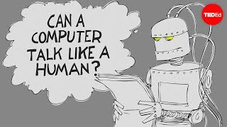

> "Human languages did not make much of a place for themselves in computing during the 1950s. It wasn’t until the early 1960 that word processing began to take shape; in 1963, for instance, an early program for writing on the computer was developed by hackers at MIT. Although some question-answering systems had been programmed earlier, as Weizenbaum [back - go to eliza] documents in his book, the first more general conversational program of the sort that Alan Turing [image]  Figure 1. The Turing test: Can a computer pass for a human? - Alex Gendler. TED-Ed. YouTube. envisioned (03) was the one Weizenbaum created from 1964 to 1966."
> "While Turing’s guess that a thinking machine would be around in 2000 may not have been right on target, within more limited contexts, Turing’s prediction that computers would plausibly interact with people using language as an interface [>] Go to hypertext to discovery more >> was borne out long ago, by Weizenbaum’s work in the 1960s." [reference *][*] Comptuer Power and Human Reason – Joseph Weizenbaum, 1976.
[Next] >>